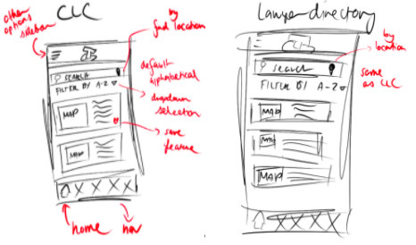
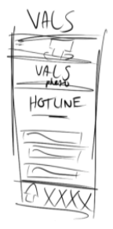
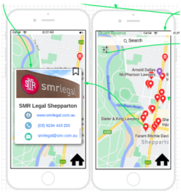
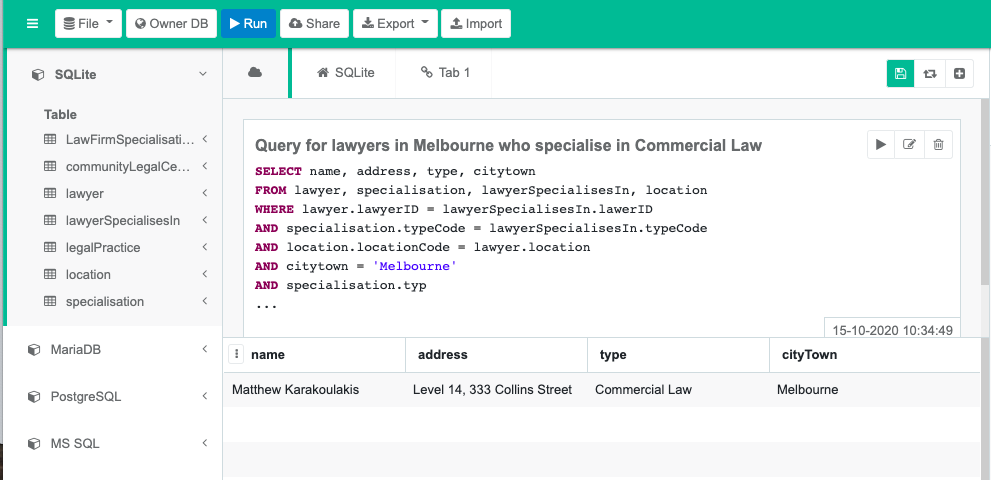

Increasing the Accessibility of Legal Services
Topic

Photo by Tingey Injury Law Firm on Unsplash
For this project, we aim to create a mobile application for iOS devices that, upon completion, will serve to help Victorians better navigate their way around the law and justice system. This application will thus have a twofold purpose:
- To aggregate different legal services available within Victoria - Given the wide range of avenues through which Victorians can ask for legal assistance, it may be intimidating to know where to start. Additionally, people may not know that other such alternatives exist, and believe that the most expensive option is the only one available. To combat both of these scenarios, the app will primarily focus on centralising the main sources of legal assistance: community legal centres, Victoria Legal Aid, Victorian Aboriginal Legal Service, and lawyers/law firms.
- To provide general resources for Victorians to learn about and understand the law, regardless of what language they speak - The law is complex and comprehensive, often written in ways that make it difficult for people to understand without the legal know-how to parse the jargon. Those who can’t speak the language are even more so at a disadvantage. As such, the app’s secondary focus will be providing resources in plain English that can be understood by all Victorians, as well as having those same resources (where possible) be translated in a multitude of different languages. A feature where users can ask questions about the law, which will be answered by qualified lawyers/legal professionals, will also be added to enhance the informative aspect of the app. Additionally, interpreters and interpreting services are essential when it comes to helping those unable to speak English effectively navigate the law, and this app will provide space for those services to be accessed.
Motivation
The law and justice system should be impartial. To achieve this, everyone should have access to it and be judged fairly in the court of law. The legal system only works when everyone is informed of the law and their rights, and understands how the law is implemented and upheld. Given that we live in a capitalist society with no limit to monetary gain, obtaining legal representation has become very costly, and high quality representation is very much available only to those who can afford it.
Considering the state of America and the protests happening across the country, as well as the persisting divisions that are reinforced by the over-representation of Indigenous peoples in Australia, there is a clear divide between law enforcers and the people they should be protecting. A problem lies with law enforcers who are exploiting the law for their own gain and individuals who aren’t fully informed of the law to properly protect themselves from such exploitations.
Humanity as a whole is becoming a much more technologically advanced society, where information about these topics should be easily accessible to the masses, using technology will be instrumental in removing the factors that hinder people from accessing the justice system, particularly vulnerable and disadvantaged Victorians.
Having a free mobile application that anyone can install onto their phones means that legal services can be easily delivered to those who would best benefit from it, but perhaps may not be able to access them due to factors such as:
- being unable to afford private legal representation
- living in rural areas where legal resources are limited
- not knowing where to look for legal advice, not being able to consult someone for legal advice, or not being able to understand legal advice given
As such, we hope this mobile application proves particularly beneficial to Victorians affected by these factors.
Aims and Goals

Photo by Silvan Arnet on Unsplash
Overview
We aim to create a mobile application for iOS devices that aggregates legal services throughout Victoria and improves their accessibility. This application will primarily aim to both connect users, particularly disadvantaged demographic, to legal services that can provide them with the assistance they require, while having a secondary aim of educating a wider audience of the law and the rights afforded to them.
GOAL ONE: Determine the final pool of potential features to be included in the application.
Given that this project could include a plurality of features to cover all the legal assistance that could be provided in Victoria, we had to limit the scope of this project in terms of practicality and plausibility. When we discussed what features we could add or remove from the application based on what Belle wrote in A1 and what we expanded upon in A2, we decided that on our pool of potential features (CLC finder, lawyer/law firm finder, VLA, legal repository, ask a lawyer) that we could further remove and adjust as necessary.
GOAL TWO: Aggregating all the legal information necessary to influence how extensive the future design needs to be / what needs to be accommodated.
As we work to determine what features will eventually make it to the final prototype, it was important to see whether the information we want to share with the public is available and, if so, how extensive it is. This is so that we can better anticipate how the UI design will best be presented to cater for readability as well as determining what database will be needed to host all of this information in the future.
GOAL THREE: Have a working prototype of the UI of the mobile application (building upon goal two).
Producing a prototype is essential to the developmental process of this project. Using Figma to create a working UI that demonstrates how the features are used and interacted with allows us to practically work out the kinks and presentation of our project. It also opens up the possibilities for user testing and improvements. Producing this early enough in our developmental process means we can properly identify and flush out features and design elements that don’t work or need to be reiterated through testing. It should also be stated that testing is a constant process that we would continue throughout development all the way through the final product.
GOAL FOUR: Establish a database where all of the important legal information can be held.
In order to design an application that aggregates and provides resources to legal information, it is expected that it will contain a database to house it all. Instead of providing external resources to our users, we want to collect that information and let them access it directly. Doing so will make our application feel meaningful and useful, and set it apart from users having to look up the resources online.
GOAL FIVE: The viability of working with Xamarin to create our legal application.
Doing more research and looking into other mobile-app development software that we can use in-case there are better alternatives. Although Xamarin looks promising with cross-platform development between iOS and Android, and beginner tutorials there may be other programs that can do the same thing that are easier to use. We should explore and research our options and find what is ideal for the development of our application in-order to move forward with our project.
GOAL SIX: Figuring out how to fuse the database with the functionality of the application.
Once we have the ui / application complete and the database established, the final step in development of the app is to connect the two together. Making sure users are able to access all the information provided in the database while using the application. This is to make sure that our application is fully functional and fulfills its primary objective before we can move forward with the project.
GOAL SEVEN: Considerations of how to host the mobile app and distribute it.
How do we host our application? Are there any costs to hosting our application? If so, how do we generate the resources? Do we have an effective marketing plan? - Once production of the application is finished, we need to come up with a plan on how to move forward in regards to costs of hosting and further maintenance of the app once it launches. Not too mention advertising and raising awareness for the application. If we underestimate this process and fail to market our application properly there are big risks that users don’t even know the application exists (this was a key problem identified in a previous Victorian Legal Aid report relating to a sexual consent app).
Plans and Progress
The project was initially Belle’s personal project idea, which was something that was inspired by Belle’s recent completion of a Criminology/Law & Justice focused degree, and was furthered by Belle’s current career as a transcriptionist for Victoria Police. Accessibility (and lack thereof) of the law and justice system, specifically the courts, was something she studied extensively, and how the paradigms of injustice are reinforced because people:
- could not physically access justice
- could not monetarily afford justice
- could not understand the law because it was written in a way that not everyone can understand
Belle spent most of Assignment 1 brainstorming ways through which technology could address these above barriers, and settled on a mobile application because it was something that could easily slide legal knowledge into the pockets of many. In Assignment 2, the group selected to build upon this project idea given how plausible it was to accomplish compared to the other group members’ idea. The group furthered upon the work completed by Belle in Assignment 1, expanding upon the motivations of the project to define the tenet of the application: empowering disadvantaged Victorians. Assignment 2 was also when new features were added in light of this, as well as a deeper exploration of the team’s IT skill set to execute and complete this project.
How has it progressed?
The development of Goony’s legal aid application has followed the intended aim and scope of the project that was discussed at the planning stage of this project. The scope of our project has limited us to creating a working user interface that will base the continuation of the project for the next 10 weeks of development.
We started by breaking down the project into a series of functional requirements that would assist Goony in delivering their intended aim of providing a legal aid service to people who may not have knowledge in or don't have resources to access legal services elsewhere. The features that Goony settled on were:
- Map screen with community legal centre locations (including a search function)
- Victoria Legal Aid (VLA) information
- Staff login (for VLA staff, law firm staff/lawyers etc.)
- Law firm directory/search (by area of specialisation, location, pro bono, etc)
- Law firm directory posting for each firm (contact details, status, website etc.). This will include back end functionalities (thanks to a database) which will allow this posting to be edited/updated by their respective law firm/lawyer
- A “library” of other law resources, including: A Victorian Aboriginal Legal Service section; Plain English Legal information (articles/informative videos, etc); Resources translated into languages other than English, as well as links to various interpreter services; An “Ask a Lawyer” function
Production
Once we settled on a series of functional requirements for the application, Goony then moved on to creating mock-ups of the user interface. Creating a user interface for an application requires the integration of the intended functional requirements in a way that promotes usability of the application. Using a series of standardised design principles in tandem with Nielson’s heuristics we started to mock-up some ideas for the user interface.
Consistency and Standards
It’s important for an interface to have consistency in its functionality. The Find a Lawyer/Law Firm features and the Find a Community Center were thus designed to have similar functions.

Prominence
It’s important for users to have their eyes drawn to what we deem as important features of the application. Our Victorian Aboriginal Legal service section demonstrates this principle by having the users eyes drawn to the VALS hotline.

Aesthetics and Minimalist Design
The below wireframe drafts shows initial versions of our homepage and Victorian Legal Aid section, which reflects the heuristic of minimalist design by only having the important features of our application on the homepage.

Match Between System and the Real World
It’s important as a user to be able to understand functionality of an application quickly without much effort. With this in mind, Google Maps was implemented as a navigation system, which allows users to find locations and directions to law firms or CLCs on our applications.
After several mock-ups of the user interface, Belle moved on to developing the final prototype of the user interface in Figma. The final prototype works as a fully functional display of what the user interface will look like in the finished mobile application, and abides by the same design heuristics and principles.
What stage of the plan are you up to?
Goony is now up to the stage where the working user interface needs to be transposed into a working mobile application and developing a working and integrated database for the application. An important part of this particular step is user testing. To ensure we are delivering a project that will actually achieve our aim in a user focused and user friendly way is a key part of developing a mobile application. An iterative approach to user testing should be taken when developing a program. This is important because if there are any major design issues or functionality issues they can be discovered and fixed quickly without much hassle at all stages of development.
Dead-ends included
Fortunately during the course of this project, things have been running very smoothly. We’ve encountered no dead-ends thanks to careful planning and proper risks assessment. The closest we’ve come to a dead-end was changing our project at the start of this assignment. We were originally planning to create a virtual assistant, but due to the complex nature of the project and our own limited experience and technical-skills we decided to shift project ideas to something more technically approachable.
Decisions made
We decided following Assignment 2 to change our method of task allocation - from dividing by marks on the rubric to taking a more collaborative approach, and each contributing to every task together. This led us to decide to use the Kanban tool to distribute our individual workloads across all of the tasks. On reflection we didn’t really take advantage of the Kanban tool specifically; but we did speak in team meetings about what we should focus and work on before the following meeting, and relied on individual team members' initiative to collaboratively contribute to those tasks.
We also changed our initial project choice from a virtual assistant to a legal aid app. This decision was made largely due to limitations in our group's technical knowledge and experience, which limited the feasibility of us creating such an app as an artifact. We decided to go with the legal aid app because it would give us all an opportunity to cover several aspects of project development, instead of spending the majority of our time trying to learn how to code, which might have limited the scope of what we would learn from the assignment.
We decided to create the UI prototype exclusively for IOS, in order to save time on creating an android version as well. This was largely for the same reasons as outlined in the previous point - that we wanted to maximise our available time on looking at different aspects of the assignment, rather than dedicating time to essentially duplicating one part.
A major decision we came to in week 10/11 was how to proceed with our project, given we were ahead of schedule. Our main artifact was intended to be the Figma prototype of the app, but we had nearly finished that, and finished most of the report content as well, as of week 11. We discussed with Anthony in our consultation whether we should focus on deepening what we had already chosen to do - i.e. really consolidate the prototype as a high fidelity one with all the features we had chosen, and possibly add more - or broaden the scope and include other artifacts such as beginning on a SQLite database, Xamarin coding, etc. We ended up taking somewhat of a middle approach, in which we incorporated additional elements (including a relational database file and entity relationship diagram), but kept our primary focus on finishing the prototype, updating our forked github page with new content, and planning out our group video presentation (which we had somewhat forgotten about).
Changes that have been made to the project plan
Throughout the project there haven’t been too many changes to the project plan. The main change to the plan that Goony decided to implement, apart from the obvious of changing project ideas which was mentioned previously, was to complete a mock-up database and populate it with some sample data as well as a user interface prototype. The decision to mock-up a database as well came at the last minute after the consultation with Anthony. Goony committed to doing the database mock-up because it seemed like the project artefact was going to be completed with a couple of weeks left in the intended timeframe, which gave us a little bit more time to deliver a more complete vision of the project.
Handover plan
Goony is currently up to the stage of usability testing of our user interface design. This is an important thing to mention because it’s what will need to be done straight after the handover. Once this has been completed and user feedback has been successfully integrated into the prototype, the next step is to create a working SQLite database that will be influenced by Tom’s mock-up design of the database and contain more than just sample data.
The next step in the plan is to create a working mobile application using Xamarin. This will take the most time so the most amount of time should be spent on developing the actual working iOS application. After this, The newly created database will need to be integrated into the application. Finally and with time permitting, a final run of usability testing should be conducted to ensure that our intended users and demographic find the legal aid application intuitive and effective to use.
Roles
In line with our reflection on assignment 2, our team has chosen not to assign particular roles to each member, but instead to each participate in every facet of assignment 3. It is hoped that this will ensure that we each have a more holistic and rounded appreciation of (and contribution to) the project, rather than the more compartmentalised approach we took previously. That being said, it is still important to identify and understand the specific roles and responsibilities of the project, even if more than one of us are performing them.
Whereas the ‘skills and jobs’ section of this assignment outlines the roles that we anticipate we would need to incorporate down the track; this section is less about defining what type of professionals we would need to hypothetically employ, and more about describing the types of tasks that we as a group have performed. This comes with the obvious caveat that none of us are currently IT professionals (though not all of the roles described are exclusively IT-related).
Project Manager
We have each contributed to the management of the project, insofar as setting specific goals and timeframes within which to reach them, and assigning individual responsibilities. Similarly, we have all played a role in coordination and participated in robust communication and reflection of where the group as a whole is at, including discussions on accountability.
User Interface Designer
Again, given that our project is a smartphone app, we have been conscious throughout the process that our app’s UI needs to be user-friendly, intuitive, and accessible. This has meant the collaborative undertaking of tasks such as wireframing, prototyping and general discussions over what we intend our app to look like and how we want it to function (this has included taking into account such things as Neilson’s Heuristics and design principles and laws).
Content Researcher and Writer
The technical requirements of our app are not the ends of our project, but the means. As our aim describes, the objective is to have a product that aggregates legal services throughout Victoria in order to improve the accessibility of such information to disadvantaged demographics. This has required detailed research into what is already available, but also in terms of finding and critically analysing resources related to Victorian legal aid, and legal help resources in general, in order to determine what we want to include in our app.
Database Architect
This was more of an adjunct role in order to demonstrate an example of what type of database we would use in the app. A UML diagram was first designed, then a schema obtained from it, which was turned into a relational database using SQLite (the more common DBMS for smartphone apps given its portability). Obviously with this database being illustrative rather than functional, moving forward we would need to scrape a lot more data to input, as well as incorporating the database within the app software.
Scope and Limits
Given that none of our group have experience in designing or creating mobile applications, we have purposely limited our initial scope to creating a prototype which mimics the functionality of what we want our app to do, without actually being programmed to do so. By doing this, we are able to focus on the features that we want to include, and ensure that the app serves the purpose it was intended for. This means that, in this initial phase of our project, we only need to come up with example templates for each feature, such as a screenshot of the google maps function, or an example of a Law Firm page or Community Legal Centre directory. By taking this approach, and limiting our scope to a snapshot of what the app will be, rather than actually learning how to program it (which would take up most of the remaining time in the semester), we will be able to use our time more productively and get the most out of this assignment.
For example, by having a prototype screenshot of the Law Firm Directory, we are able to easily show how that feature will function without having to create and populate a database of law firms and program that into the app (although we did create a sample database to illustrate this). Likewise, we can show how a user can find legal advice in different languages without actually having to create a fully functioning app, or needing to find the correct translations of all the information we intend to include. Finally, Figma allows us to show how the different screens on our app will interact with one another without us having to actually learn the programming skills needed to do it.
Of course, this scope takes into account the fact that we only have five weeks to complete assignment 3; the additional 10 hypothetical weeks include starting to learn some of the requisite programming skills for the actual app development, as well as incorporating other existing technologies and platforms that we intend to use, such as google maps and SQLite, into our design.
Tools and Technologies
Testing
The purpose of building a prototype using Figma is twofold: it enables us to have somewhat of an idea of what the app will look and function like, but it also allows us to test and troubleshoot any issues that come up - whether unanticipated or just something we have flagged to look at. Obviously this type of testing is not technical, but it is a good type of testing to do in the initial stages of the project, because it allows us to design the functionality of the app before we proceed to the programming stage, and to iron out any issues we find before we start coding and they become harder to fix
Over the course of the project, we aim to continue testing in different ways during different stages. For example, once we have a working prototype, we can undertake an analysis of the app’s usability using Neilson’s usability heuristics or comparisons with other design principles and methods. The results (i.e the severity of any issues we encounter) will inform decisions on how best to proceed - for example, whether we jettison some functions of the app, change their functionality, or merely change or simplify the aesthetic.

As for user testing, we will again heed Neilson’s advice and test the app with five users, which will provide us with sufficient feedback to improve our design. This will be repeated twice more, giving a total of 15 user tests, which will allow us to iteratively diagnose problems with, and improve the design of our app. The following graph illustrates why the number 15 has been chosen. We will be able to find our users using a survey with screener questions, so as to ensure we will be getting data from our target demographic (i.e. those people who are in need of legal advice/information but who are not sure how or where to get it, generally from disadvantaged backgrounds).
Timeframe
Risks
Artefacts
Sample Relational Database
Available here.
Figma Prototype
Available here.